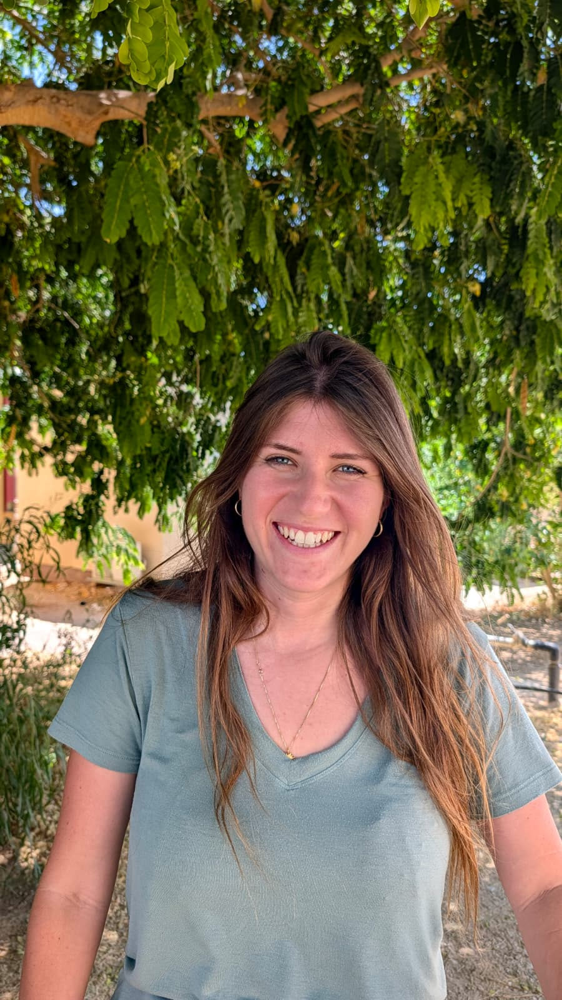
יערה ערמון
ראשת המכינהראשת מכינת ערבה-עין יהב.

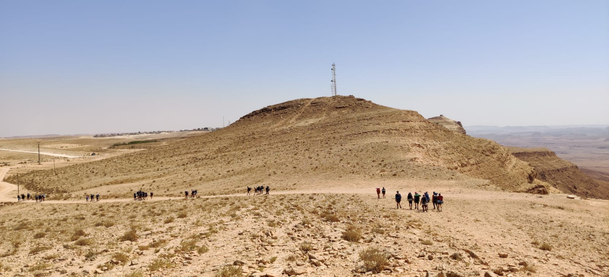
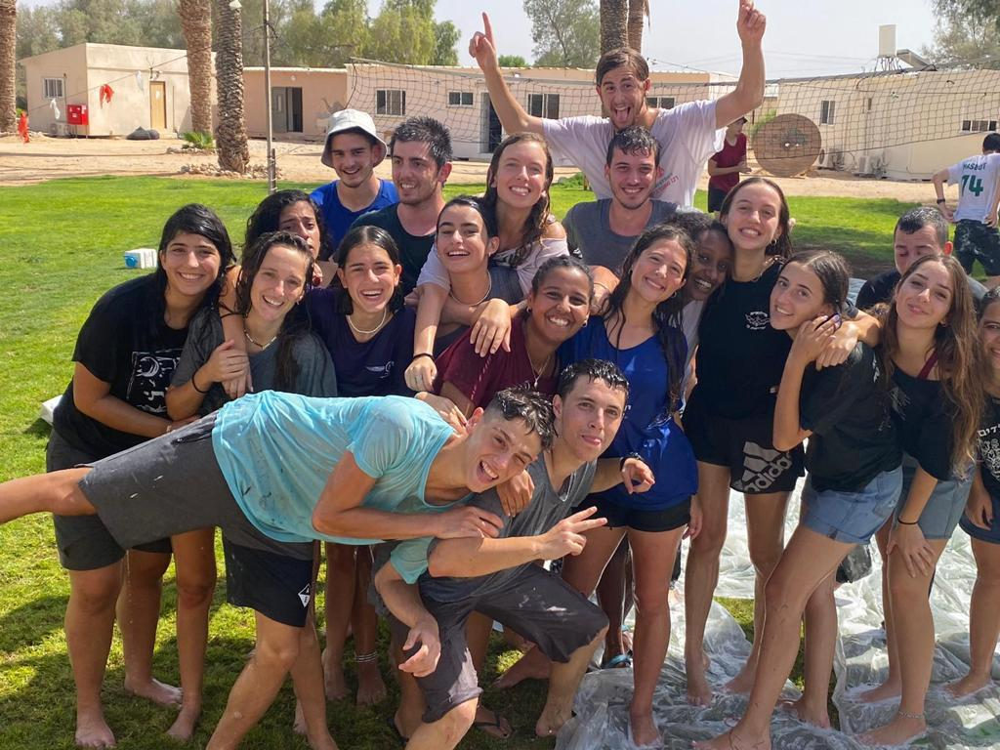

״סוּר מֵרָע וַעֲשֵׂה־טוֹב, בַּקֵּשׁ שָׁלוֹם וְרָדְפֵהוּ״ (תהילים לד, טו)
זהו אחד הפסוקים היפים בתנ"ך. ככזה הוא הפך לידוע ומוכר לכל, ונראה שאין יפה ממנו לתאר את מה שאנחנו מבקשים לעשות בשנת המכינה.
זו שנה שבה אנחנו מתכנסים יחד, בנים ובנות, דתיים וחילוניים, מכל קצוות הארץ, גיאוגרפית ורעיונית, ומבקשים לקיים את שלושת חלקי הפסוק.
עצם ההתכנסות יחד היא סור מרע. ההבדלות והזרות שיוצרות ריחוק ובורות מתמוססות בשנת המכינה, ומפנות מקום למפגש בלתי אמצעי ולשיח כן ומעמיק, מתוך כבוד וסקרנות אמיתית לתפיסות עולם ולדרכי חיים שונות.
הצמיחה של כל חניך ושל הקבוצה כולה היא בבחינת עשה טוב. הלימוד המשותף, המעורבות בקהילה וההתקדמות הנפשית המתמדת, מתוך תודעת שליחות ואחריות, יוצרים אדוות משמעותיות במעגלים רחבים.
שלום שמתאפשר מתוך ראיית הזולת, הכרת זהותו, כאביו וחלומותיו, כבוד הדדי, שיח מפרה וטוב משותף. שלום בין אדם לאדם, בין הזרמים במדינה האהובה שלנו, ובין המדינה לעולם כולו.
להבנתנו, שנת המכינה היא שנת מתנה, שמתווספת לשנים שקדמו לה ונועדה להעצים את אלה שיבואו אחריה. כל הבאים בשערי המכינה מגיעים טעונים בכל הטוב שאיתו באו, ויוצאים עם מטען נוסף למסע החיים.
מתוך אמונה גדולה בכל חניך וחניכה שבאים בשערינו, ובתפילה למסע חינוכי אמיתי ומעורר.

ראשת מכינת ערבה-עין יהב.
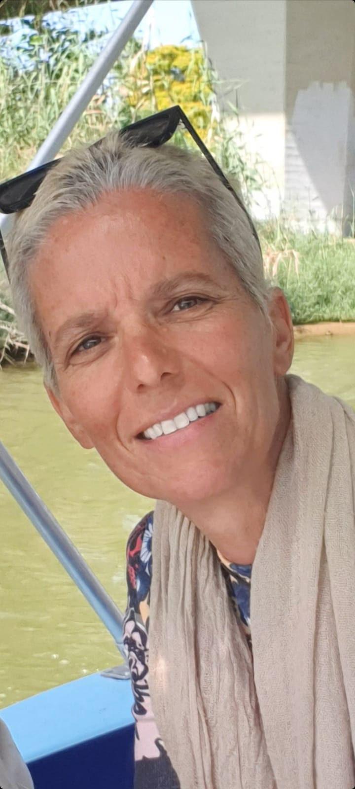
תושבת עין יהב, אמא לארבעה. בעלת תואר שני במנהל עסקים, אבל אוהבת את התחום החינוכי הרבה יותר.
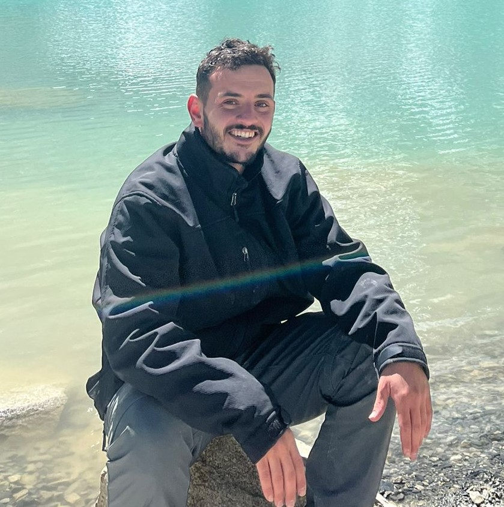
בוגר מכינת יתיר, שירת כלוחם ומפקד באגוז. מחובר לחקלאות, לאדמה ולשקט של המדבר.
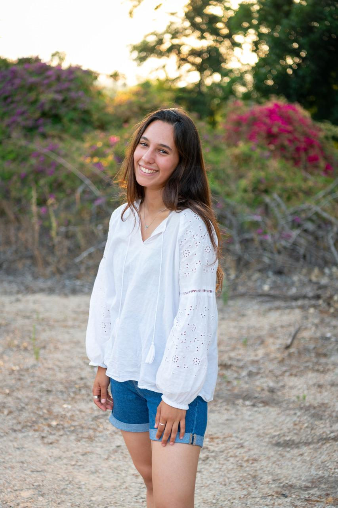
בת 24, מגבעת עדה. בוגרת מכינת חצבה, שירתה כקצינה לוחמת באיסוף קרבי. מאז המכינה התאהבה בערבה ובסיפור הדתי-חילוני, ומחוברת מאוד לעשייה של העמותה.
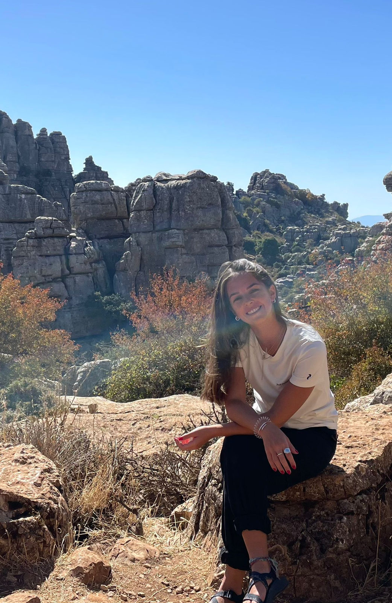
בת 24, נולדה וגדלה במושב כפר ביאליק. בוגרת מכינת ״הנגב״ בשדה בוקר, שירתה כמאמנת סימולטור ומפקדת בחיל הים. מחוברת לשילוב בין השקט של הערבה לחינוך משמעותי.
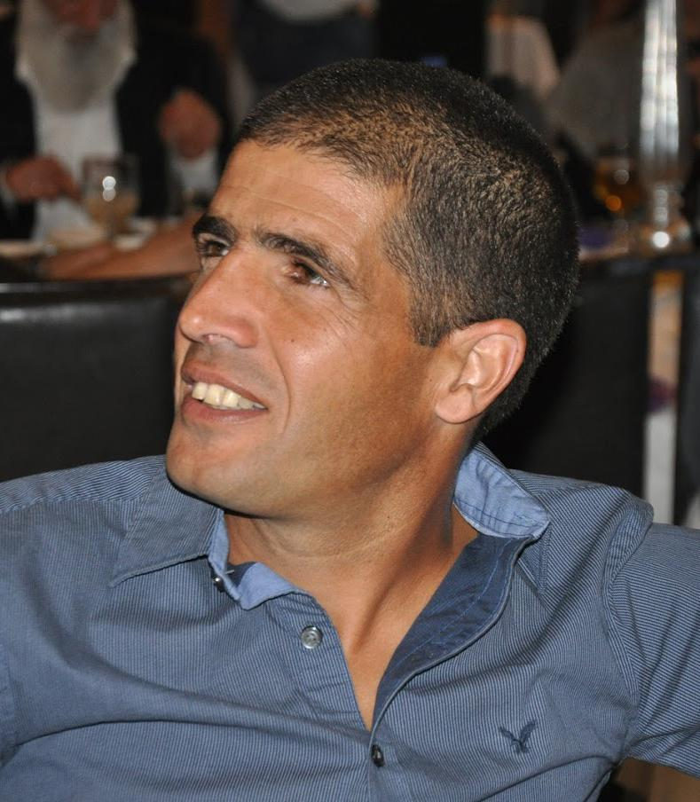
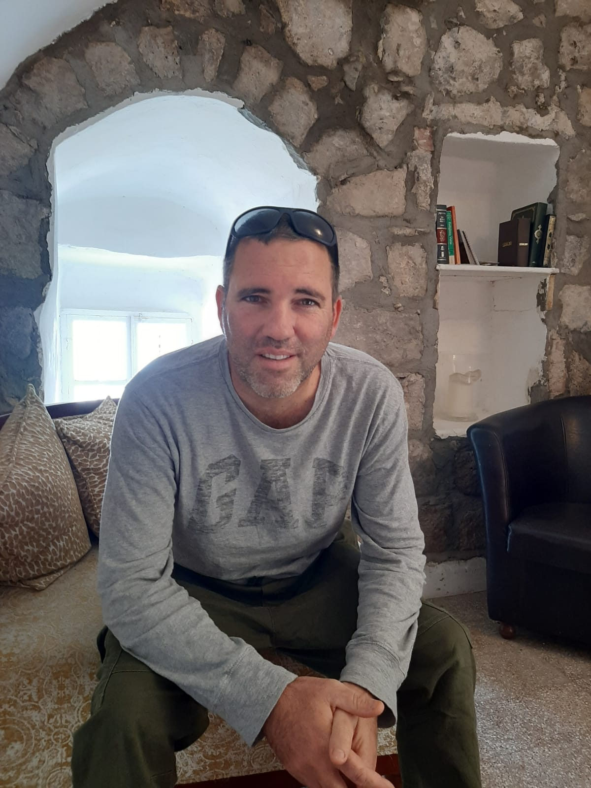
נולד ומתגורר במושב כפר ורבורג. נשוי ליעל, אבא ליואב, אורי ורוני. מלמד תרבות המערב וקריאה מודרכת בספר הטאו.

בן 42, נשוי למאיה ואב לשמונה, גר בירוחם. בוגר ישיבת ההסדר מכללת הרצוג ומוסמך מטעם בית המדרש לרבנות ישראלית. שותף מייסד לקבוצת השיח הבין-דתי בנגב, ושותף למכינות הערבה מתחילתן.
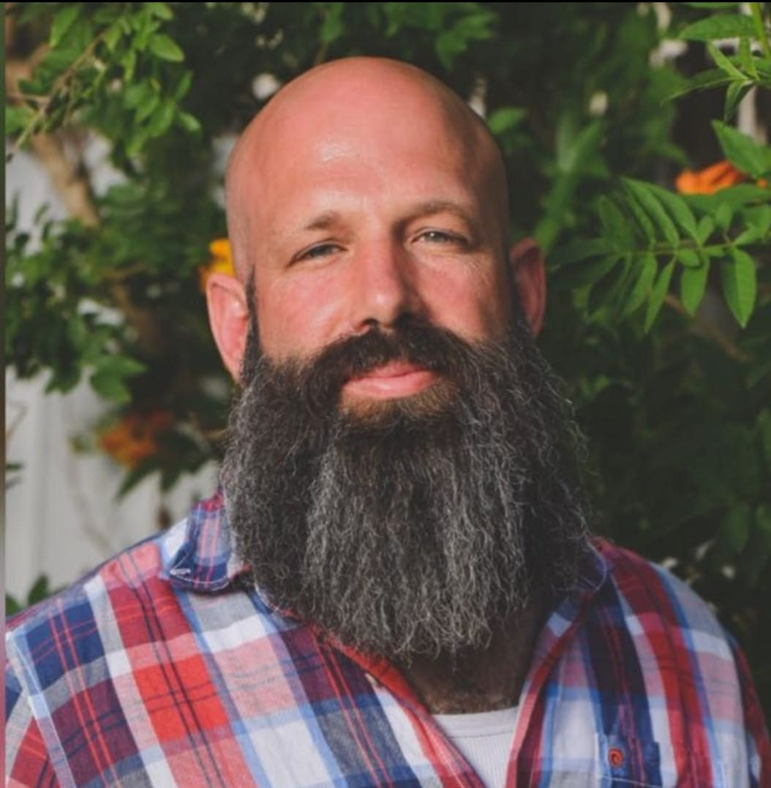
מלמד מגדר.

תיאולוג חילוני. מרצה להגות יהודית ופילוסופיה במכללת ספיר ובמכינות קדם-צבאיות. תושב שדרות וחבר בקיבוץ העירוני מגוון. מוביל את הארגון FAB: ידידות חוצה גבולות.
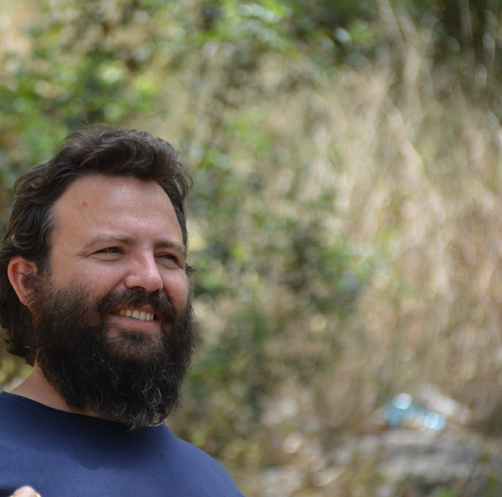
מרצה לפילוסופיה פוליטית ולמגמות גלובליות עכשוויות, מנחה קבוצות ומכשיר צוותים. ייסד וניהל את תכנית 'רעים' של החברה למתנ"סים, והיה ראש מכינת ערבה-פארן.
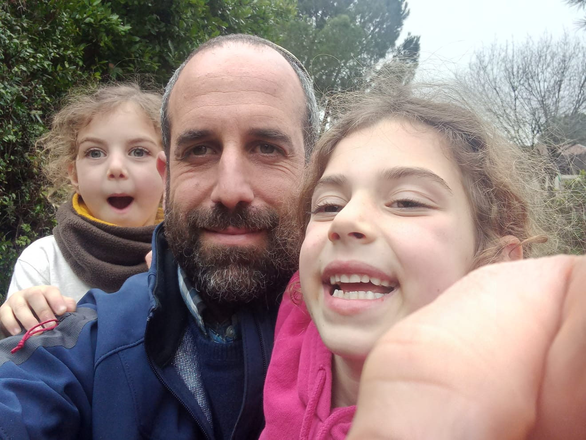
נשוי ואב לארבעה, מתגורר במושב קשת ברמת הגולן. למד ולימד כעשר שנים בבתי מדרש ברוח הרב קוק. כבר 7 שנים מלמד במכינות ובמדרשת הערבה.

בת מושב חצבה, נשואה ליובל ואמא לשלושה. בעלת תואר שני בחינוך. מלמדת חינוך פיננסי מעשי, לעצמאות ולאחריות אישית.
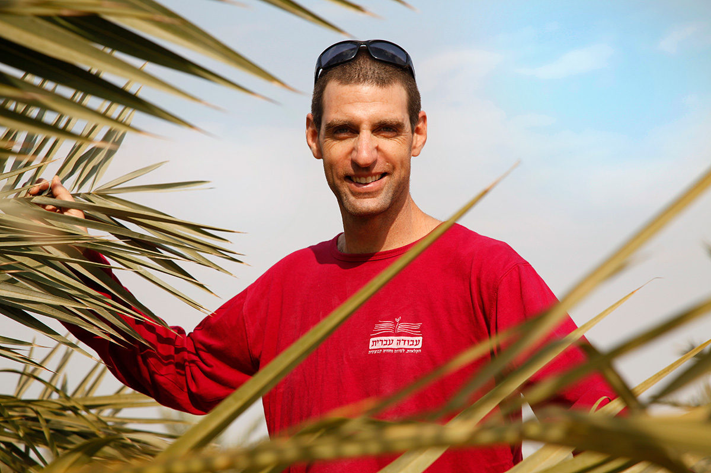
חבר מושב עידן ומגדל תמרים. מלמד גאופוליטיקה של המזרח התיכון, יחסי ישראל והפלסטינים והיסטוריה של מערכות ישראל.

דוקטור למנהל ומדיניות ציבורית, מרצה ותיקה באוניברסיטת בן גוריון. מחברת בין מדיניות ממשלתית, חקיקה ונורמות חברתיות לבין כלכלת הבית ומיצוי זכויות. גרה במדרשת בן גוריון, אמא לשלושה, ומכינה אחלה שקשוקה.
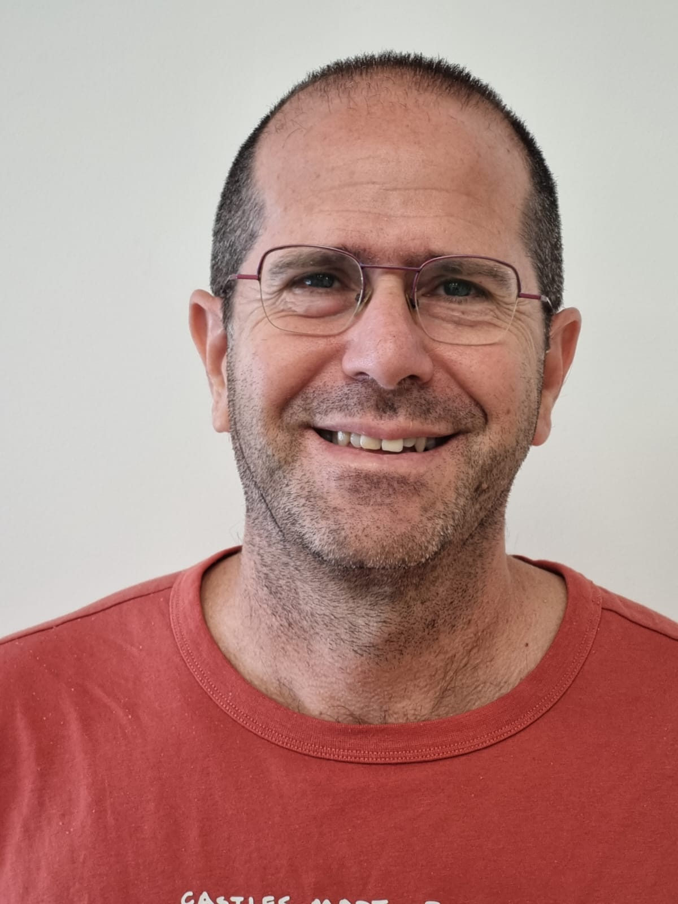
ירוחמי. מהנדס אלקטרוניקה בתחום תכנון צ'יפים, אבא לחמישה. לומד פילוסופיה ומדריך במכינות בנושא הסכסוך הישראלי-פלסטיני.
השאירו פרטים, עם שם מלא ומספר תעודת זהות, ונחזור אליכם.